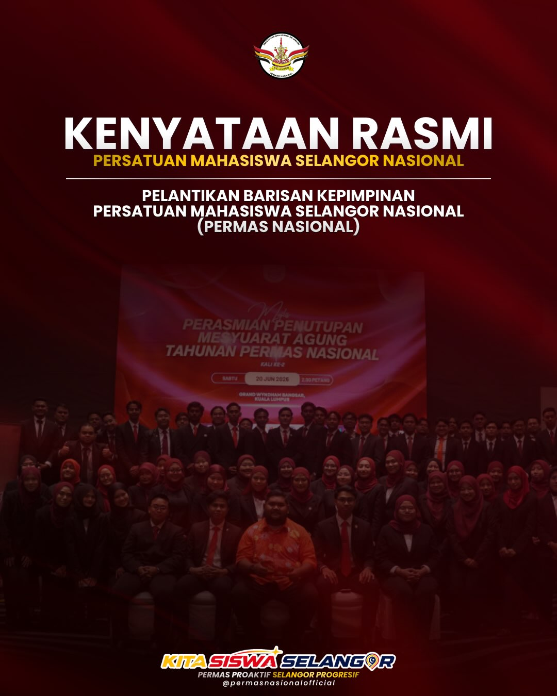
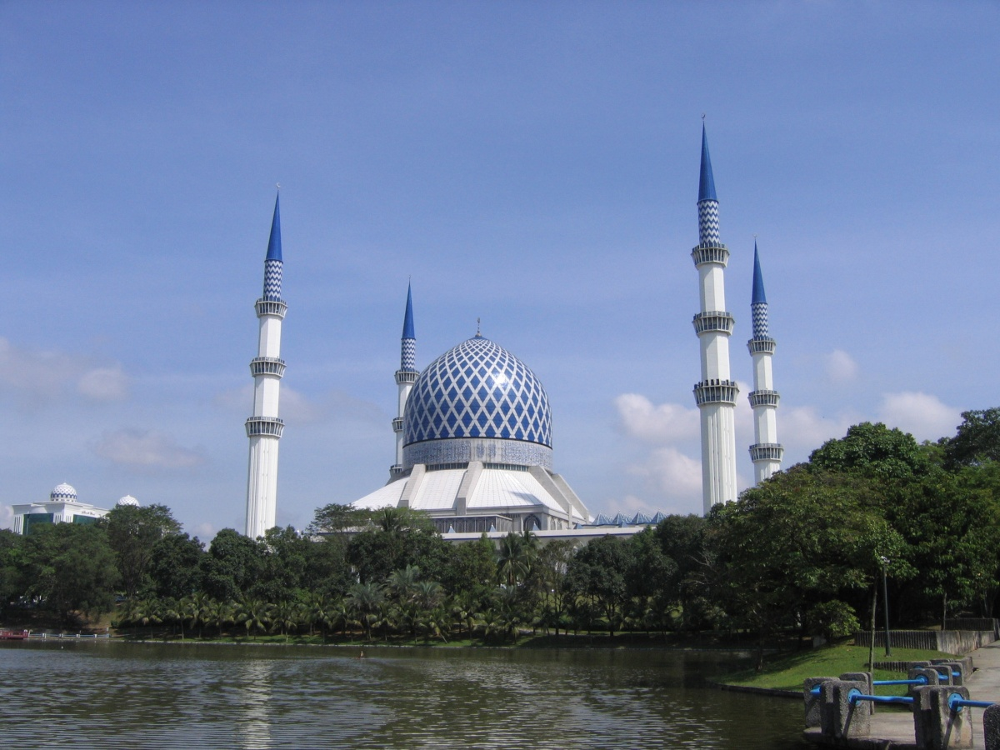

Berita Mahasiswa Selangor: Memuatkan berita tempatan terkini mengenai mahasiswa & biasiswa Negeri Selangor...
Menyatukan lebih 28,450+ mahasiswa anak Selangor di 20 Universiti Awam (UA) dan 38 cawangan kampus seluruh Malaysia. Siaga 24 jam menjaga kebajikan, menyalurkan dermasiswa, dan membina jaringan kepimpinan nasional.
Jalinan Strategik Agensi Kerajaan Negeri Selangor:
28,450+
Mahasiswa Berdaftar
Anak Selangor di IPTA & IPTS
20 UA / 38 IPT
Rangkaian Cawangan
Sekretariat aktif seluruh negara
RM 3.8M+
Dana Bantuan Disalur
Dermasiswa, komputer riba & ihsan
1,200+
Penempatan SISPRO
Internship bergaji GLC Selangor
Paparan grafik interaktif agihan dana kebajikan anak Selangor serta taburan 28,450+ mahasiswa merentasi 5 zon wilayah seluruh Malaysia. Sentuh atau klik carta untuk butiran terperinci.
Himpunan automatik berita tempatan terkini mengenai mahasiswa anak Selangor, biasiswa pendidikan negeri, serta perkembangan pengajian tinggi Malaysia daripada media arus perdana tempatan.
Akses terus maklumat skim bantuan pendidikan negeri, peta rangkaian 20 UA, takwim program tahunan, serta saluran rasmi aduan kebajikan mahasiswa.
Tajaan Sehingga
RM 5,000 / Thn

Info penuh syarat & dokumen Dermasiswa Pengajian Tinggi, Skim Komputer Riba Percuma B40, Subsidi Tiket Kasih, dan Latihan Industri Bergaji (SISPRO).
Respon Pantas Krisis
Banjir & Sifar Lapar
Talian kecemasan bencana banjir rumah sewa, bantuan makanan Sifar Lapar, tiket pulang kecemasan kematian waris, dan klinik guaman.
Peta 20 UA Malaysia
5 Zon Wilayah • Mod Satelit & Jalan
Teroka peta satelit Malaysia dengan lokasi sebenar 20 Universiti Awam, laluan jalinan siswa, dan direktori penuh Yang Dipertua (YDP) kampus.

Jadual rasmi Konvensyen Mahasiswa Selangor (KMS), Sukan SUKMAS, Hackathon AI, dan Misi Kembara Bakti sepanjang sesi 2026.

22 Pimpinan MEK & MT
Majlis Eksekutif & Sekretariat Kebangsaan
Kenali barisan Majlis Tertinggi, Exco Kebangsaan, dan warta pelantikan rasmi PERMAS Nasional bagi sesi kepimpinan 2024–2026.
Saluran rasmi untuk melaporkan isu kebajikan, masalah yuran pengajian, penginapan kolej/rumah sewa, atau cadangan penambahbaikan terus kepada Biro Advokasi PERMAS.
Rakaman lensa aktiviti mahasiswa anak Selangor di seluruh kampus, misi kebajikan Skuad Prihatin, warta pelantikan rasmi, serta keindahan ibu negeri Selangor. Klik mana-mana gambar untuk paparan skrin penuh.
Shah Alam, Selangor Darul Ehsan
Persidangan
🔍
Mac 2026 • SACC Shah Alam
Feb 2026 • Hulu Langat
Sesi 2024–2026
 Majlis Tertinggi
🔍
Majlis Tertinggi
🔍
Sekretariat Induk
45 GLC Negeri Selangor

Panorama Siang 🔍Taman Tasik Shah Alam
Biro Kebajikan & Advokasi PERMAS Nasional menyediakan Meja Suara & E-Aduan untuk membantu mahasiswa anak Selangor menyuarakan permasalahan secara terus dan sulit kepada pihak pengurusan universiti serta agensi Kerajaan Negeri Selangor.
Kelewatan dermasiswa, tunggakan yuran pendaftaran, atau bantuan sara hidup.
02 • PENGINAPANTiada penempatan kolej kediaman, isu kontrak sewa luar, atau keselamatan premis.
03 • KEBAJIKANBantuan kos rawatan hospital, kemalangan, atau musibah keluarga di kampung.
04 • AKADEMIKCadangan penambahbaikan fasiliti pembelajaran dan kebajikan cawangan UA.